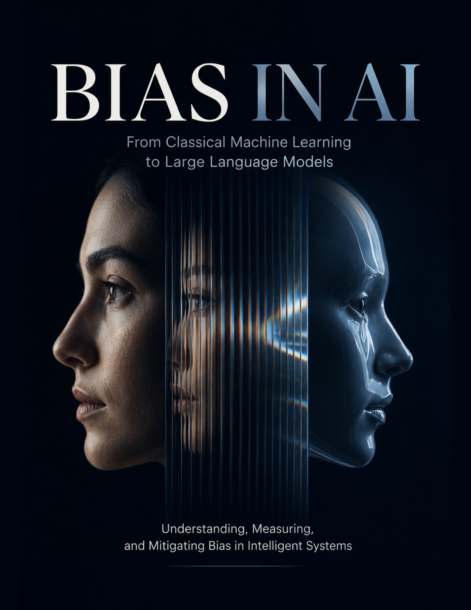

AI Systems & Infrastructure · Axiologic Research Editions
Bias in AI
From Classical Machine Learning to Large Language Models
A non-formalist but rigorous course on the many places bias enters an intelligent system: data, proxies, objectives, retrieval, interaction, evaluation, and deployment.
Bias is a system property
The same model may appear accurate overall while failing a subgroup; a seemingly useful proxy may encode an institutional history; a neutral retrieval layer may restore a disparity the base model does not visibly express.
Measure before declaring success
Fairness measures are not interchangeable moral labels. The book connects measurement choices to context, stakes, data quality, trade-offs, and the people who must live with a system’s errors.
A bias audit is not a stamp of moral purity. It is a map of where a system can fail whom, and why.
Mitigation as engineering
Design, documentation, monitoring, red teaming, appeals, and institutional ownership all matter. No isolated model adjustment can substitute for a system that keeps learning from its consequences.